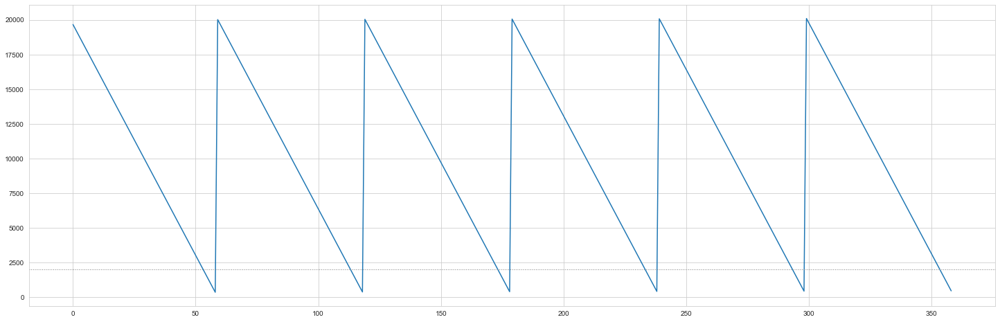
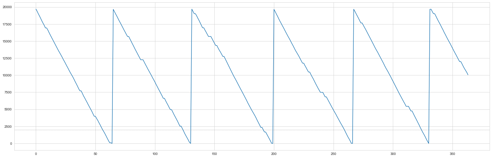
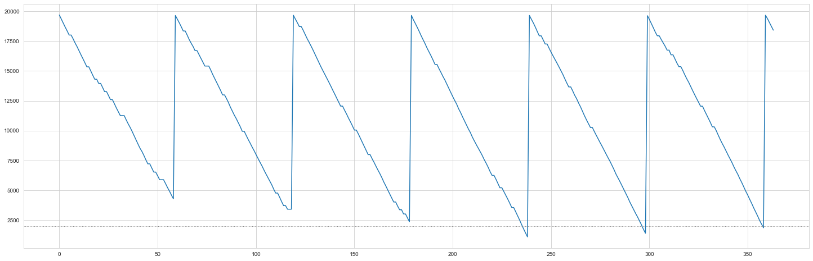

Inventory Management
In this project, we would review the EOQ model and its application when demand uncertainty is introduced. The periodic review model and continuous review model is also introduced using Monte Carlo simulation tools. All of the graphs and code can be found in the MBAN GitHub repository, feel free to download it and modify the numbers for your use case.
The Jupyter notebook can be opened in the executable environment Syzygy.
Business Background
In the modern business environment, the company needs more significant efforts to reduce the operating cost and also increase customer satisfaction. Inventory has a significant role to satisfy the customer demand hence, it becomes an important asset for any organization. Therefore, it should be managed effectively and efficiently to minimize total cost and to satisfy the customer’s requirement. In any real condition, inventory management faces barriers in the form of a tradeoff between minimizing total cost and maximizing service level. Therefore, choosing the correct inventory policy that can be applied in the industry now becomes essential to management
Economic Order Quantity (EOQ) Policy
The simplest Policy to answer the question “How much product should I order this time?”, is the EOQ model. This policy assumes a constant demand and ignores the lost sales costs. However, in the EOQ model, the tradeoff between the fixed ordering cost (or, if you’re making the item, a fixed setup cost) and the inventory carrying cost is evaluated to calculate the optimal order quantity
1. EOQ = Qo = √ ((2 * Annual Demand * setup cost)/holding cost)
2. Order cycle = √(Qo / Annual Demand) * Total working days in a year
3. Total Cost = (Qo* holding cost / 2) + (Annual demand * Setup cost)/Qo
As a quick background, the EOQ model is meant to answer the question “How much product should I order this time?” That is when you order (or make) a widget, should you order just one unit, a hundred units, a thousand units, or more? To answer that question, you need to understand the trade-off between the fixed ordering cost (or, if you’re making the item, a fixed setup cost) and the inventory carrying cost. If there is a relatively high fixed cost, you want many units in order. If the inventory carrying cost is relatively high, you probably only want to order a few.
EOQ Model Example
Manufacturer’s demand = 120,000units/year
Manufacturer’scosts:
- Fixed Cost per shipment (ordering cost) = $500/shipment
- Purchase cost = $1/unit
- Cost of holding one unit in inventory for one year = $0.3
- Selling Price = $7/unit
import numpy as np
import pandas as pd
import math
import seaborn as sns
import matplotlib.pyplot as plt
sns.set_style('whitegrid')
import operator#Constant demand
d = 120000 #annual demand
S = 500 #ordering cost
h = 0.3 #holding cost
selling_price = 5
unit_cost = 1
optimal_quantity = math.sqrt((2*d*S)/h)
cycle_time = math.sqrt((2*S)/(h*d))
order_cycle = cycle_time *360 #Assuming total of 360 working days in a year
What is the buyer’s optimal order quantity?
optimal_quantity20000.0What is the ordering interval in days?
review_period_eoq = round(order_cycle,2)
review_period_eoq60.0Simulation Model
The EOQ Quantity and cycle time is applied in a simulation that tries to replicate a market with uncertain demand. We assume that the review period is 60 days and the order quantity of 20,000 units and a lead time of 0 days is assumed. The inventory status is recorded in the simulation.
Creating a function to simulate the daily demand
# Creating a function that allocates the demand if there is a purchase
def daily_demand(mean, sd, probability):
random_num = np.random.uniform(0, 1) #chose a random number between 1 and 0
if random_num > probability: #if number is more than probability then there is no sale
return 0
else:
return np.random.normal(mean, sd)
#demand follows a log-normal distribution using mean and sd of the previous year's demand.# Define Monte Carlo Simulation to replicate demand and inventory
def eoq_monte_carlo(M,review_period,probability,mean,sd):
stock_out = 0
inventory = M
# dictionary to store all the information
data = {'inv_level': [], 'daily_demand': [], 'units_sold': [], 'units_lost': [], 'orders': []}
for day in range(1, 360):
day_demand = daily_demand(mean, sd, probability)
day_demand = round(day_demand,0)
#used to determine if there is a sale and what the demand would be
data['daily_demand'].append(day_demand)
if day % review_period == 0:
#check if the day to place order
q = M # quantity to be ordered
data['orders'].append(round(q,0))
# update inventory when product has been received from manufacturer
inventory += q
inv_gap = inventory - day_demand
if inv_gap >= 0: #check if inventory is enough to satisfy demand
data['units_sold'].append(day_demand)
inventory -= day_demand #reduce inventory by daily demand
else:
data['units_sold'].append(round(inventory,0))
lost_sales = day_demand - inventory
data['units_lost'].append(round(lost_sales,0))
inventory = 0
stock_out += 1
data['inv_level'].append(round(inventory,0))
return data#function to total cost
def calculate_cost(data,days,unit_cost,holding_cost,order_cost):
Co = len(data['orders']) * order_cost
Ch = sum(data['inv_level']) * holding_cost * (1 / days)
cost = sum(data['orders']) * unit_cost
cost = cost + Co + Ch
return cost#function to calculate profit
def calculate_profit(data,days,unit_cost,holding_cost,order_cost,selling_p):
revenue = sum(data['units_sold']) * selling_price
Co = len(data['orders']) * order_cost
Ch = sum(data['inv_level']) * holding_cost * size * (1 / days)
cost = sum(data['orders']) * unit_cost
profit = revenue - cost - Co - Ch
return profit[0]Application of EOQ Model on constant demand
This scenario assumes no uncertainty therefore a constant demand and a purchase probability of 1. Therefore the demand standard deviation is assumed to be zero and the EOQ quantity and review period are used.
#df1 = eoq_monte_carlo(20000,60,prob, mean_demand,std_demand)
df = eoq_monte_carlo(M = 20000,review_period=60,probability=1,mean=333.3,sd=0)
plt.figure(figsize=(25,8))
plt.plot(df['inv_level'])
plt.axhline(2000, linewidth=1, color="grey", linestyle=":")
plt.show()
cost = calculate_cost(df,days=360,unit_cost=1,holding_cost=0.3,order_cost=500)
cost105551.28333333334Applying EOQ model to an uncertain demand
The scenario below assumes that uncertainty in demand for a product any given day and uncertainty in the quantity of products demanded.
Probability of demand in a given day = 0.9
Mean Daily Demand = 333.3
Standard deviation of Daily Demand = 20
Leadtime = 0
prob = 0.90 #probability of demand
mean_demand = 333.3
std_demand = 20
inventory = optimal_quantity #staring with EOQdf2 = eoq_monte_carlo(M = 20000,review_period=60,probability=0.9,mean=333.3,sd=20)plt.figure(figsize=(25,8))
plt.plot(df2['inv_level'])
plt.axhline(2000, linewidth=1, color="grey", linestyle=":")
plt.show()

cost2 = calculate_cost(df2,days=360,unit_cost=1,holding_cost=0.3,order_cost=500)
cost2107359.66083333333revenue2 = calculate_profit(df2,days=360,unit_cost=1,holding_cost=0.3,order_cost=500,selling_p=7)
revenue21628699.9933250002The uncertainty in demand has caused an increase in costs due to an increase in the cycle inventory.
Continous Review model
To combat the holding costs that can accumulate due to demand uncertainty, the reorder point is determined by the inventory level. This policy is called the continuous review model.
def cc_monte_carlo(M,r,probability,mean,sd):
inventory = M
order_placed = False
order_time = 0
stock_out = 0
# dictionary to store all the information
data = {'inv_level': [], 'daily_demand': [], 'units_sold': [], 'units_lost': [], 'orders': []}
for day in range(1, 365):
day_demand = daily_demand(mean, sd, probability)
day_demand = round(day_demand,0)
#used to determine if there is a sale and what the demand would be
data['daily_demand'].append(day_demand)
if inventory <= r :
# Time to place an order
inventory += M
data['orders'].append(round(M,0))
#increase inventory with order quantity
inv_gap = inventory - day_demand
if inv_gap >= 0: #check if inventory is enough to satisfy demand
data['units_sold'].append(day_demand)
inventory -= day_demand #reduce inventory by daily demand
else:
data['units_sold'].append(round(inventory,0))
lost_sales = day_demand - inventory
data['units_lost'].append(round(lost_sales,0))
inventory = 0
stock_out += 1
data['inv_level'].append(round(inventory,0))
return datadf3=cc_monte_carlo(M=20000,r=0,probability=0.9,mean=333.3,sd=20)plt.figure(figsize=(25,8))
plt.plot(df3['inv_level'])
plt.axhline(2000, linewidth=1, color="grey", linestyle=":")
plt.show()
cost3 = calculate_cost(df3,days=360,unit_cost=1,holding_cost=0.3,order_cost=500)
cost3105592.545revenue3 = calculate_profit(df3,days=360,unit_cost=1,holding_cost=0.3,order_cost=500,selling_p=7)
revenue31665835.64935The costs using this model are slightly lower than those of the EOQ model, and consequently, the expected profits from the continuous review model are higher than the EOQ model.
Periodic Review model
Another policy to consider is the periodic review policy. Here the reorder point is the same as the EOQ model, however, the quantity ordered is varied according to the maximum order point. The order up-to quantity M is 20,000.
# Define Monte Carlo Simulation to imitate a periodic review model
def pr_monte_carlo(M,review_period,probability,mean,sd):
inventory = M
q = 0
stock_out = 0
order_placed = False
# dictionary to store all the information
data = {'inv_level': [], 'daily_demand': [], 'units_sold': [], 'units_lost': [], 'orders': []}
for day in range(1, 365):
day_demand = daily_demand(mean, sd, probability)
day_demand = round(day_demand,0)
#used to determine if there is a sale and what the demand would be
data['daily_demand'].append(day_demand)
if day % review_period == 0:
#check if the day to place order
q = M - inventory # quantity to be ordered
data['orders'].append(round(q,0))
# update inventory when product has been received from manufacturer
inventory += q
inv_gap = inventory - day_demand
if inv_gap >= 0: #check if inventory is enough to satisfy demand
data['units_sold'].append(day_demand)
inventory -= day_demand #reduce inventory by daily demand
else:
data['units_sold'].append(round(inventory,0))
lost_sales = day_demand - inventory
data['units_lost'].append(round(lost_sales,0))
inventory = 0
stock_out += 1
data['inv_level'].append(round(inventory,0))
return datadf4 = pr_monte_carlo(M = 20000,review_period=60,probability=0.9,mean=333.3,sd=20)plt.figure(figsize=(25,8))
plt.plot(df4['inv_level'])
plt.axhline(2000, linewidth=1, color="grey", linestyle=":")
plt.show()
cost4 = calculate_cost(df4,days=360,unit_cost=1,holding_cost=0.3,order_cost=500)
cost4112017.3925revenue4 = calculate_profit(df4,days=360,unit_cost=1,holding_cost=0.3,order_cost=500,selling_p=7)
revenue41615675.1662750002summ_table = pd.DataFrame({'EOQ': [cost2, revenue2],'Continous Review':[cost3,revenue3],'Periodic Review':[cost4,revenue4]})
idx = ['Costs', 'Revenue']
summ_table = summ_table.set_index(pd.Index(idx))
summ_table| EOQ | Continous Review | Periodic Review | |
|---|---|---|---|
| Costs | 1.073597e+05 | 1.055925e+05 | 1.120174e+05 |
| Revenue | 1.628700e+06 | 1.665836e+06 | 1.615675e+06 |
Final Conclusion
As seen from the tables above we can see in this case the Continuous Review policy outperforms the Periodic Review policy and the EOQ model in terms of the expected profits for each product and proportion of lost orders.
However, both the continuous and periodic review policy have their advantages. Periodic review policy has a fixed review period which allows the organization to better forecasts the orders made over some time. Whereas the continuous review policy keeps the order size constant and gives flexibility in terms of the times to place the order.
The expected profits is dependent on different costs (holding, ordering and other costs) that are different for every product and organization. The right inventory management model depends on the impact of these cost and and the demand distribution of the product.
GitHub Link
All of the graphs and code can be found in the MBAN GitHub repository, feel free to download it and modify the numbers for your use case.
References
[1] Anderson, Sweeney, Williams, Camm, Cochran, Fry, Ohlmann. An Introduction to Management Science: Quantitative approaches to Decision Making. 14th Edition, 2015. Cengage Learning. pp. 457–478.
[2] Nagpurkar, M. (2020, April 2). Inventory Management using Python. Retrieved June 3, 2020, from https://towardsdatascience.com/inventory-management-using-python-17cb7ddf9314
Created and maintained by the Master of Business Analytics Community
Licensed under a Creative Commons Attribution-NonCommercial-ShareAlike 4.0 International License.